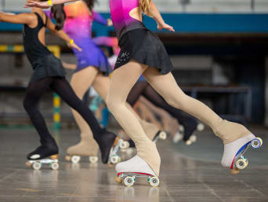
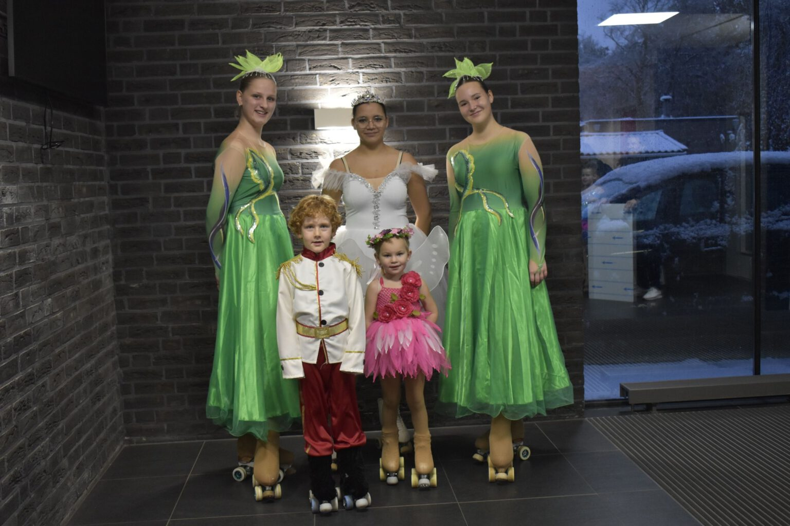
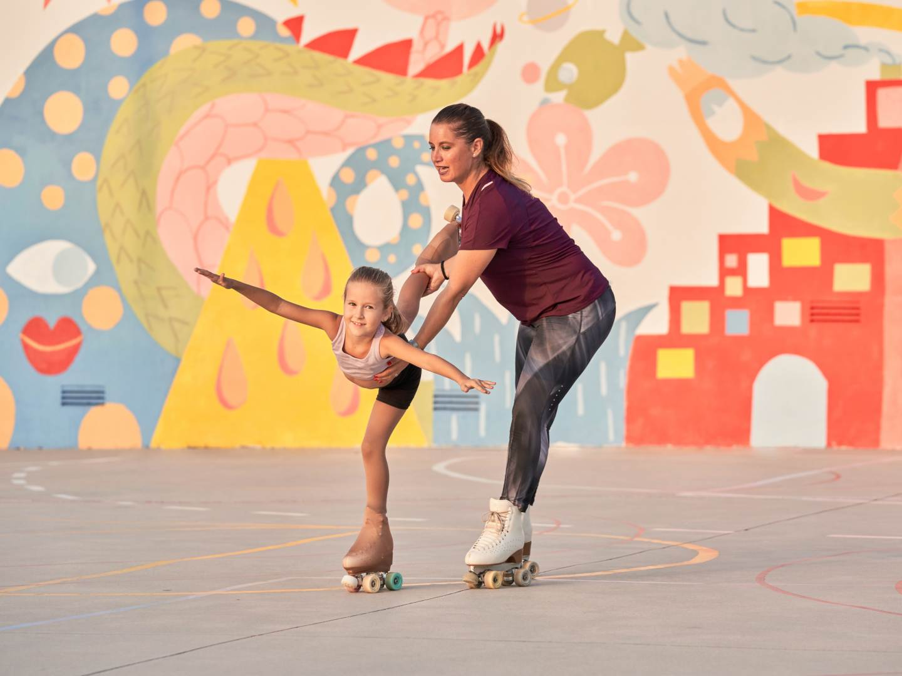
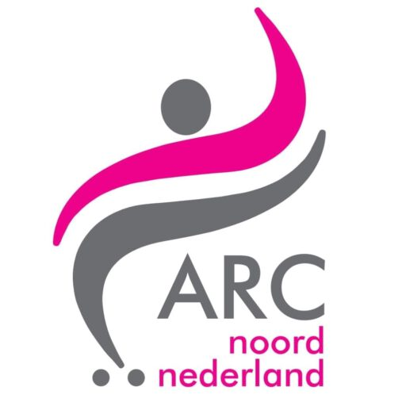

Hier vind je alle informatie over kunstrolschaatsen en de dingen die je nodig hebt.
Kunstrolschaatsen is een ongelooflijk elegante en fascinerende sport op wielen die elegantie en sportieve uitdaging perfect combineert. Dit maakt het meer dan alleen een rolschaatssport. Met kunst rolschaatsen kun je je creatieve kant uiten en je emoties in de sport integreren. Wij laten je zien wat deze indrukwekkende sport bijzonder maakt, welke uitrusting je nodig heeft en hoe je het beste kunt leren kunstrolschaatsen.

Net als bij kunstschaatsen, maar dan op wielen in plaats van op ijzers, presenteren de atleten bij kunstrolschaatsen een veeleisende kür die sprongen, pirouettes, passen en in sommige disciplines zelfs liften omvat. De sport combineert perfect uitgevoerde en technisch veeleisende elementen met een artistieke interpretatie van muziek en staat gelijk aan een expressieve dans- of balletvoorstelling op rolschaatsen.

Technische uitvoering van verplichte elementen.
Creatieve choreografie met sprongen en pirouettes.
Synchroon schaatsen met liften en werpsprongen.
Dans op wielen met verplichte en vrije dans.
Formaties en synchroon schaatsen in teamverband.
Theatrale optredens met kostuums en effecten.
Als je geïnteresseerd bent in kunstrolschaatsen, kun je het beste beginnen bij een rolschaatsclub bij jou in de buurt. Daar kun je deelnemen aan een maand proeftraining en onder professionele begeleiding de sport uitproberen. Wij zijn ARTISTIC ROLLERCLUB NOORD NEDERLAND UIT WINSCHOTEN.

Wil je kunstrolschaatsen uitproberen, dan kun je bij de club vaak de juiste rolschaatsen lenen voor een proefles. Je kunt de sport dus vrijblijvend uitproberen en zelf ontdekken. Als je serieus met rolsporten wilt beginnen, heb je het juiste paar rolschaatsen nodig om te beginnen, kleding voor trainingen en misschien een outfit voor wedstrijden. Welke rolschaatsen heb ik nodig om kunstrolschaatsen te leren? De eisen aan de juiste kunstrolschaatsen variëren afhankelijk van de discipline. Wanneer je begint met trainen, moet je bij de aanschaf van een nieuwe of gebruikte rolschaats op de volgende kenmerken letten: Er zijn verschillende merken kunstrolschaatsen: Edea, Risport schoenen worden het meeste gebruikt. De plaat waar de schoen op staat is afhankelijk van beginners/gevorderden/topsport. Dan zit er nog verschil doe je roldans of vrijrijden of figuren. Je trainer kan je goede adviezen geven wat het beste bij jou past.
Kunstrolschaatsen boeit jong en oud met zijn verscheidenheid aan bewegingen en creatieve ontwikkelingsmogelijkheden. Als je wilt leren kunstrolschaatsen, zoek dan een rolschaatsclub bij jou in de buurt en regel een proeftraining. Met een beetje hard werken zul je snel vooruitgang zien en je eerste figuren op rolschaatsen kunnen uitvoeren.
